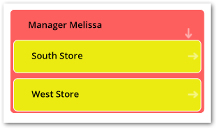

Overview
What are data value graphs?
A data value graph is a visual representation of how data values relate to each other. A graph can display relationships between data in the same table, different tables, and even tables from multiple data models. By default, you can view a graph of selected data values. Additionally, you can choose a data value graph configuration created by an administrator to display a customized graph of selected data values. See the sections below for more details on each graph type.
Default graphs
A default data value graph requires no advance configuration. Default graphs display data values in colored boxes and use arrows to represent the relationships between the data values. The following image provides an example of a default data value graph:
Configured graphs
Administrators can create configurations to determine which values and relationships can display. They also configure how the add-on renders these relationships by assigning a display type to each one. The table below provides examples of the available display types. To display a graph, users select one or more values in a table and run the table's Display data using configuration service. Note that this service is available only from tables included in a configuration.
The following table outlines the available relationship display types:
Type | Example and description |
|---|---|
As Lines | As shown in the following image when you set the display to lines, values display in rectangular nodes and lines between nodes represent relationships.
|
As Containers | As shown in the following image containers show a parent/child relationship as nodes within nodes. Outer nodes are the parents of the smaller, inner nodes.  |

The sample tutorial provides detailed configuration instructions. You can follow the tutorial step-by-step, or feel free to use the generalized instructions in the Configuring graphs chapter to create your own configuration.